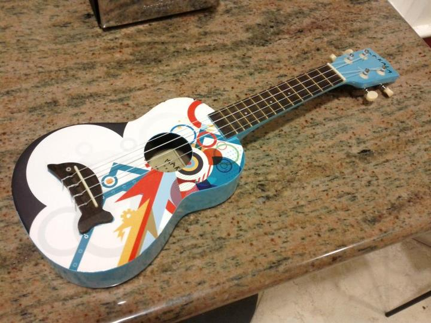

[back to the main page]
Most of the things I've made mysteriously disappear when you are not looking at a computer monitor. Here are some small exceptions.
I put a sticker on this ukulele. (The dolphin was original, though.)

These cards are all business.